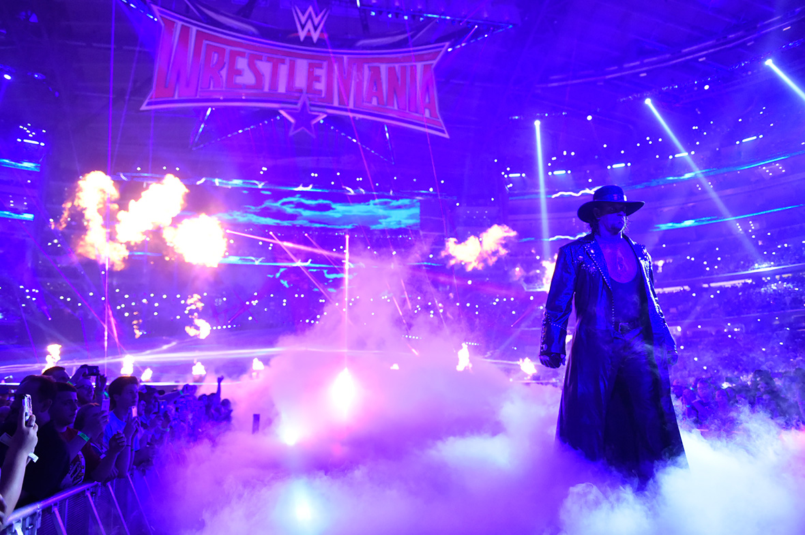

Flair é oficialmente reconhecido pela WWE, TNA e Pro Wrestling Illustrated como 16 vezes campeão mundial (oito vezes Campeão Mundial dos Pesos-Pesados da NWA, seis vezes Campeão Mundial dos Pesos-Pesados da WCW e duas vezes Campeão Mundial dos Pesos-Pesados da WWF). O real número de reinados mundiais variam de acordo com a fonte, indo de 16 até 25 títulos.
1 - The Undertaker

Mark William Calaway
Nascimento: 24 de março de 1965
Ele possui um recorde de vitórias na WrestleMania, o principal pay-per-view da WWE, com 23 vitórias e duas derrotas (sendo invicto por 21 WrestleManias consecutivas). Durante sua carreira, Calaway foi oito vezes campeão mundial, tendo ganho o WWF/E Championship quatro vezes e o World Heavyweight Championship três vezes , e o USWA Unified World Heavyweight Championship uma vez sendo conhecido naquela época como Master of Pain. The Undertaker também ganhou sete títulos de duplas: seis vezes o WWF Tag Team Championship e uma vez o WCW Tag Team Championship. The Undertaker foi o vencedor do Royal Rumble de 2007, se tornando a primeira pessoa a entrar por último na luta e vencer. Calaway é o único lutador da WWE a ter aparecido no primeiro episódio do Raw ainda em atividade.